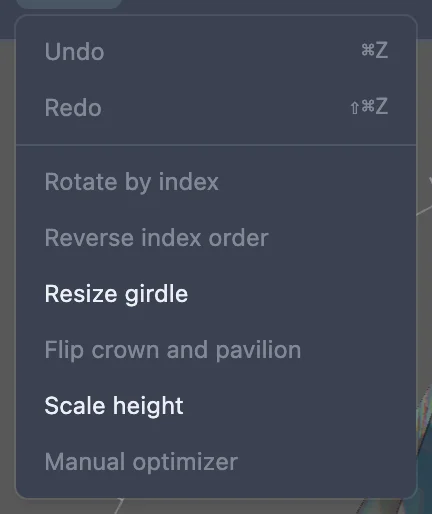
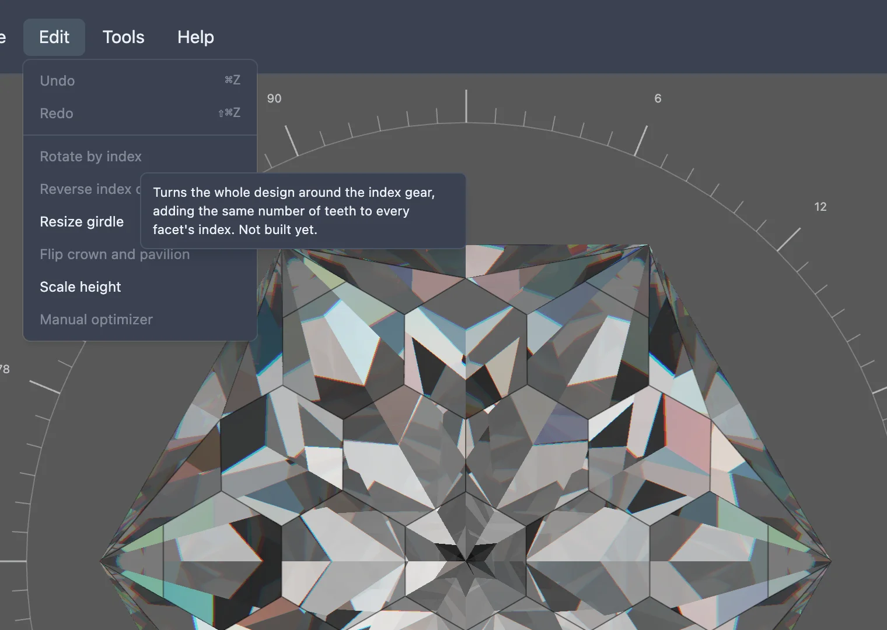

This feature is still being built. The menu item below exists, but choosing it does nothing yet.
A design's facets each sit at a particular tooth of the index gear — the wheel you turn at the machine to set where a facet goes around the stone. Rotating a whole design by index would turn every facet's tooth number by the same amount at once, so the cut ends up exactly the same shape, just spun to a different starting point on the gear. That would be handy for lining up a favourite facet with tooth one, or matching whatever starting position suits a particular piece of rough, without renumbering every tier's teeth by hand.
None of that is built yet. In the studio's Edit menu, an item named Rotate by index is already there, but it is greyed out and does nothing when clicked. Hovering it shows a tooltip describing what it is meant to do, ending "Not built yet."

